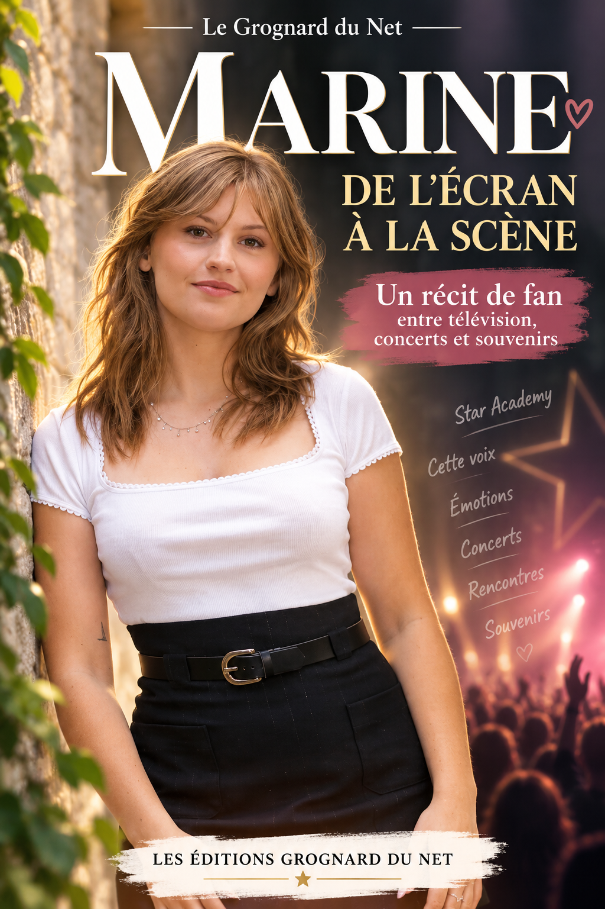

NOTE AU LECTEUR
Ce livre n'est pas une biographie officielle de Marine Delplace. Il n'a pas été écrit avec elle, ni en son nom. Il raconte une histoire plus modeste et, à mes yeux, plus étrange : celle d'un téléspectateur ordinaire qui, après plus de vingt ans passés devant la Star Academy sans jamais se considérer comme un fan absolu, s'est laissé surprendre par une voix.
Les éléments concernant le parcours public de Marine ont été reconstruits à partir d'émissions, d'interviews, de publications et de sources accessibles au public. Les souvenirs qui me concernent sont racontés avec la liberté d'un récit : une sensation peut être condensée, une soirée résumée, une pensée reformulée après coup. Je n'ai pas cherché à inventer une intimité avec Marine que je n'ai pas. Je n'ai pas davantage voulu parler à sa place.
Ce qui suit est donc un livre de fan, au sens le plus simple du terme. Un livre sur ce moment curieux où l'on croit regarder une émission comme toutes les autres et où, sans prévenir, une artiste finit par entrer dans votre quotidien.
Et tout commence, comme souvent avec les histoires qu'on n'avait pas prévues, par une phrase assez ridicule :
Je n'avais absolument aucune intention de devenir fan de Marine.
PROLOGUE
JE N'AVAIS PAS PRÉVU DE DEVENIR FAN
À quarante-cinq ans, on pense avoir dépassé l'âge des emballements de téléspectateur.
Enfin, c'est ce qu'on se raconte.
On a un travail, des habitudes, des factures, des rendez-vous, des journées qui passent beaucoup trop vite et des soirées qui commencent parfois avec une télécommande dans une main et l'envie de ne surtout pas réfléchir dans l'autre. On regarde une émission, on commente deux ou trois prestations, on dit qu'untel chante bien, qu'un autre nous touche moins, puis on va se coucher. Le lendemain, la vie reprend.
C'est comme ça que j'ai toujours regardé la Star Academy.
Depuis la première saison.
Je pourrais presque mesurer ma vie à travers les différentes époques du château. J'avais vingt ans quand Jenifer est apparue sur TF1. À l'époque, la télévision avait encore ce pouvoir étrange de fabriquer des rendez-vous collectifs. On ne regardait pas un programme quand on voulait : on était là quand il commençait. Le lendemain, on en parlait. Les chansons du prime continuaient dans les voitures, au travail, dans les cafés. Les candidats devenaient, pendant quelques semaines, des gens que l'on avait l'impression de connaître un peu.
J'ai aimé la Star Academy. Beaucoup, même. Mais pendant toutes ces années, je suis resté ce que j'appellerais un spectateur normal.
J'avais mes préférences. Bien sûr que Jenifer m'a marqué. Comment aurait-il pu en être autrement ? Elle était la première. Elle reste attachée à cette sensation de découverte, à l'époque où personne ne savait encore ce que l'émission allait devenir.
Puis il y a eu Grégory Lemarchal.
Là, c'était différent.
Je reviendrai sur lui, parce qu'il mérite plus qu'une ligne dans un souvenir. Sa voix, son courage, sa façon d'être sur scène ont créé quelque chose de particulier chez énormément de gens, et j'en fais partie. Sa disparition a aussi laissé une trace qui dépasse largement une émission de télévision.
Mais même avec Grégory, je n'étais pas devenu ce que je suis devenu plus tard avec Marine.
Je regardais. J'admirais. J'étais ému. Puis je reprenais ma vie.
Les saisons passaient. Certaines me plaisaient davantage que d'autres. Certains candidats me semblaient évidents, d'autres moins. Quand la Star Academy a disparu de TF1, je n'ai pas couru après elle. L'édition diffusée ailleurs ne m'a pas attiré. Pour moi, la Star Ac, c'était TF1, Nikos, le château et cette drôle de sensation du samedi soir.
Quand elle est revenue en 2022, j'étais content. Comme beaucoup de téléspectateurs qui avaient grandi avec elle, j'ai retrouvé quelque chose de familier. Anisha a gagné. L'année suivante, Pierre Garnier s'est imposé face à Julien. J'ai aimé la saison, j'ai apprécié Pierre, Helena et d'autres candidats. J'ai regardé avec plaisir.
Mais je n'étais toujours pas accroché.
J'aimais l'émission. Pas une personne en particulier.
Et puis la saison suivante a commencé.
Je n'avais aucune raison de penser que celle-là serait différente.
Au début, elle ne l'était pas.
Un château, des jeunes artistes, des professeurs, des évaluations, des primes, les mêmes discussions sur les réseaux : qui chante le mieux, qui mérite d'être là, qui va sortir, qui pourrait gagner. Le grand manège habituel se remettait en route.
Et parmi les candidats, il y avait cette jeune femme du Nord, petite par la taille, immense dès qu'elle ouvrait la bouche, avec un humour capable d'arriver juste au moment où l'on s'attendait à une grande déclaration sérieuse.
Marine.
Je voudrais pouvoir écrire qu'à la première seconde j'ai su.
Ce serait joli.
Ce serait faux.
Les choses importantes ne se présentent pas toujours avec un panneau lumineux « Attention, souvenir fondateur ». Parfois, elles commencent de manière beaucoup plus banale. Une voix retient l'attention. Une interprétation donne envie de réécouter. Une personnalité fait sourire. Puis on se surprend à attendre la prestation suivante.
Et un jour, sans savoir à quel moment exact on a franchi la ligne, on n'est plus seulement en train de regarder.
On suit.
Puis on espère.
Puis on défend.
Puis on crée.
Dans mon cas, ça a pris une forme un peu particulière parce que, sur Internet, je ne suis pas seulement Jérôme devant sa télévision.
Je suis aussi Le Grognard du Net.
Le pseudo était déjà là. La chaîne existait déjà. Elle n'avait pas été créée pour Marine. Je parlais de ce qui m'amusait, de ce qui m'intéressait, de Star Academy, de musique, de télévision, de culture populaire. Je bricolais des formats, des shorts, des vidéos plus longues. Je testais. Je publiais. Comme beaucoup de créateurs, je regardais les statistiques en faisant semblant de ne pas trop les regarder.
Puis Marine a commencé à prendre de la place.
D'abord dans mes vidéos.
Puis dans mes idées.
Puis dans mes chansons.
Puis sur mon site.
Et, forcément, dans ce livre.
Je n'ai jamais voulu devenir le fan qui sait tout, qui juge tout, qui pense posséder une artiste parce qu'il a regardé cent vidéos d'elle. Au contraire. Plus je la suivais, plus une règle me paraissait importante : rester à ma place.
Je pouvais aimer sa voix sans prétendre la connaître.
Je pouvais raconter son parcours sans raconter sa vie privée.
Je pouvais créer des chansons inspirées par l'énergie qu'elle dégageait sans copier sa voix et sans faire croire une seconde qu'elle les avait chantées.
Je pouvais être enthousiaste sans devenir envahissant.
En résumé, je pouvais être fan et rester respectueux.
Ce mot-là compte beaucoup pour moi.
Parce qu'au fond, ce livre n'est pas l'histoire d'une obsession. C'est l'histoire d'une admiration inattendue.
L'histoire d'un type qui avait regardé la Star Academy pendant plus de vingt ans et qui pensait connaître le programme par cœur.
Jusqu'au jour où une fille appelée Marine s'est mise à chanter.
Et merde.
Le Grognard venait de trouver quelqu'un à qui il n'avait absolument pas prévu de s'attacher.
Le plus étonnant, c'est que je n'ai pas compris immédiatement que tout cela méritait un livre.
Pendant longtemps, je pensais en vidéos. Une idée devait tenir dans un titre, une miniature, quelques minutes. Même lorsqu'un sujet me touchait vraiment, je réfléchissais en images et en rythme de montage.
Puis une évidence s'est imposée : il manquait quelque chose entre toutes ces vidéos.
Le lien.
Ce qui expliquait pourquoi cette candidate-là avait pris plus de place que les autres. Pourquoi, après des années à regarder la même émission avec plaisir mais sans dépendance particulière, je m'étais mis à suivre une carrière au-delà du samedi soir. Pourquoi j'avais écrit des chansons de fan, organisé des pages sur mon site, préparé des hommages, attendu un concert.
Une vidéo pouvait raconter un événement.
Un livre pouvait raconter la transformation.
Alors j'ai décidé de partir de moi, même si ce n'est pas toujours l'exercice le plus confortable. Parler de Marine sans parler du fan n'aurait aucun sens ici. Il fallait assumer les quarante-cinq ans, les souvenirs de 2001, Grégory, les saisons suivies sans passion excessive, les heures de montage, les commentaires, les moments où je me suis surpris moi-même à défendre une chanson comme si j'avais participé à l'enregistrement.
Ce livre n'est donc pas seulement « sur Marine ».
Il est sur ce qu'une artiste peut déclencher chez quelqu'un qui ne s'y attendait plus vraiment.
CHAPITRE 1
AVANT MARINE, IL Y AVAIT DÉJÀ LE CHÂTEAU
Pour comprendre ce qui m'est arrivé avec Marine, il faut remonter bien avant elle.
Octobre 2001.
La Star Academy arrive sur TF1. Jenifer n'est pas encore « Jenifer » comme on la connaît aujourd'hui. Nikos Aliagas débute dans ce rôle qui finira par lui coller à la peau. Le château n'est pas encore un monument de la télévision populaire française. C'est une nouveauté.
Moi, j'ai vingt ans.
Vingt ans, c'est l'âge où l'on est persuadé d'être déjà adulte tout en ayant encore suffisamment d'insouciance pour organiser une soirée autour d'un programme télé. À l'époque, la mécanique paraît énorme : des jeunes enfermés dans un château, des cours, des évaluations, une élimination, puis ces grands primes où des artistes confirmés viennent chanter avec eux.
On peut sourire aujourd'hui du mot « événement », parce que nous vivons entourés de contenus disponibles en permanence. Mais en 2001, une finale regardée par plus de onze millions de personnes n'est pas juste un programme populaire. C'est un morceau de culture commune.
Jenifer gagne cette première saison.
Je l'aime beaucoup. Sa fraîcheur, sa voix, son énergie. Il y avait quelque chose de spontané chez elle. Et, surtout, elle représentait le commencement. Même vingt-cinq ans plus tard, quand je repense aux premières saisons, son prénom arrive avant tous les autres.
Ensuite viennent Nolwenn Leroy, Élodie Frégé, puis Grégory Lemarchal. Après lui, Magalie Vaé, Cyril Cinélu, Quentin Mosimann, Mickels Réa. Des voix différentes, des parcours différents, des carrières très différentes elles aussi.
Je ne vais pas réécrire ici toute l'histoire de la Star Academy. Ce n'est pas le sujet. Ce qui m'intéresse, c'est ce que ces années ont créé chez moi : une habitude de téléspectateur.
Je regardais les candidats arriver et je savais déjà, sans y penser, comment les choses allaient se dérouler.
Il y aurait le candidat impressionnant dès le premier soir.
Celui qui progresserait.
Celui qu'on trouverait injustement nommé.
Celui qui deviendrait plus populaire pour ses blagues que pour ses évaluations.
Il y aurait les professeurs sévères, les larmes après les débriefs, les lettres, les surprises, les parents qui apparaissent sur un écran au pire moment possible pour les nerfs de tout le monde.
Et puis le public choisirait.
La Star Academy a cette particularité : elle mélange la musique et l'attachement. On ne vote pas seulement pour la meilleure note tenue le plus longtemps. On vote aussi pour une personnalité, une progression, une fragilité, une manière d'être dans un groupe.
Pendant des années, j'ai compris cette mécanique sans jamais tomber complètement dedans.
Je pouvais dire : « Lui, je l'aime bien. »
Ou : « Elle, elle a quelque chose. »
Mais le dimanche suivant, je ne passais pas trois heures à chercher une vidéo, une interview, un extrait de quotidienne ou une ancienne chanson enregistrée avant l'émission.
Je ne créais pas de contenu autour d'un candidat.
Je ne me demandais pas comment raconter son parcours.
Je ne me retrouvais pas à réfléchir à un titre de vidéo en conduisant.
Surtout, je n'avais jamais ressenti cette envie très particulière de voir quelqu'un réussir après l'émission, longtemps après que les lumières du prime se soient éteintes.
C'est une différence importante.
Un téléspectateur veut savoir qui gagne.
Un fan veut savoir ce qui vient après.
Pendant les premières saisons, je suis resté du premier côté de la frontière.
Même lorsque certains artistes continuaient leur carrière avec succès, je les suivais comme n'importe quel amateur de musique. Jenifer sortait un album ? J'écoutais. Nolwenn chantait quelque chose qui me plaisait ? Très bien. Quentin Mosimann poursuivait une route complètement différente ? Tant mieux.
Mais ma vie n'était pas organisée autour de leurs sorties.
La disparition de l'émission sur TF1 a d'ailleurs prouvé à quel point mon attachement était lié au rendez-vous lui-même. Quand une nouvelle version est apparue sur NRJ 12 quelques années plus tard, je ne l'ai pas suivie. Ce n'était pas un boycott, encore moins un jugement. Simplement, quelque chose manquait.
Pour moi, la Star Academy était liée à une époque, une chaîne, une voix de présentateur, un château.
Je pensais que l'histoire était terminée.
Et puis les années ont passé.
La télévision a changé. Nous aussi. Les réseaux sociaux sont devenus une scène parallèle. Les candidats n'étaient plus seulement jugés le samedi soir : on commentait leurs moindres gestes presque en direct. Les extraits circulaient partout. Une performance pouvait vivre dix vies sur TikTok, YouTube, Instagram et les plateformes de streaming.
Quand TF1 a annoncé le retour de la Star Academy en 2022, j'ai eu cette réaction typique des gens qui prennent de l'âge :
« Ah, ça, c'était quelque chose à notre époque. »
Phrase dangereuse. Elle vous transforme immédiatement en ancien combattant du samedi soir.
Mais j'ai regardé.
Évidemment que j'ai regardé.
J'ai retrouvé le château. Nikos. Le générique. Les évaluations. Les jeunes artistes qui entraient avec des rêves beaucoup trop grands pour tenir dans leurs valises.
Anisha a remporté cette saison du retour.
Puis, en 2023, une nouvelle promotion est arrivée. Pierre Garnier s'est imposé, avec ce timbre immédiatement reconnaissable. Julien a atteint la finale. Helena s'est fait une place dans le cœur du public et a construit ensuite une carrière qui a confirmé qu'on n'a pas besoin de gagner pour laisser une empreinte.
J'ai aimé cette saison.
Vraiment.
Mais il y avait encore une distance confortable entre l'écran et moi.
Je regardais Pierre devenir Pierre Garnier. Je comprenais l'engouement. Je trouvais certaines prestations excellentes.
Et pourtant, une fois le programme terminé, je redevenais très vite moi-même.
Le Grognard n'était pas encore devenu fan.
Il ne savait simplement pas qu'il lui restait une saison avant de perdre toute crédibilité sur ce point.
CHAPITRE 2
GRÉGORY, LE PREMIER CHOC
Il y a cependant une exception dans mon histoire de téléspectateur raisonnable.
Grégory Lemarchal.
On ne peut pas parler de mon rapport à la Star Academy sans parler de lui, parce qu'il a été le premier à me faire comprendre qu'une voix pouvait dépasser le cadre de l'émission.
Il arrive à la Star Academy en 2004.
Sa maladie est connue. Sa mucoviscidose fait partie de son histoire, mais très vite, ce n'est pas elle qui prend toute la place. Il chante. Et lorsqu'il chante, on oublie le reste.
C'est sans doute la première fois que j'ai ressenti cette chose étrange : le silence intérieur qui arrive lorsque quelqu'un commence une chanson et que, pendant quelques minutes, on n'a plus envie de commenter.
Grégory possédait cette puissance-là.
Sa victoire avait quelque chose d'évident pour beaucoup de téléspectateurs. Pourtant, ce qui est resté avec le temps n'est pas un pourcentage de votes, une finale ou un trophée. C'est une présence.
Quand il est mort en 2007, à seulement vingt-trois ans, la Star Academy a cessé pendant un instant d'être un simple divertissement dans la mémoire de millions de personnes.
Je l'avais regardé chanter. Je l'avais vu rire. Je l'avais vu se battre pour être jugé comme un artiste et pas seulement comme un jeune homme malade. Et soudain, le garçon de la télévision n'était plus là.
Cela laisse forcément quelque chose.
Des années plus tard, son nom suffit encore à réveiller des souvenirs extrêmement précis chez beaucoup de gens de ma génération. Une prestation. Un sourire. Une note. Un silence.
C'est pour cela que, quand je dis que Marine est la première candidate depuis longtemps à m'avoir fait basculer d'un simple intérêt vers quelque chose de beaucoup plus fort, je ne cherche pas à effacer ce que Grégory représentait.
Ce sont deux émotions différentes.
Avec Grégory, il y avait l'admiration, puis l'émotion immense liée à son histoire et à sa disparition.
Avec Marine, il y a eu autre chose : la durée, la curiosité, l'envie de créer autour de ce que je ressentais, puis le passage de l'écran à la scène.
Grégory a été le premier choc.
Marine a été la première aventure de fan.
Entre les deux, presque vingt ans se sont écoulés.
C'est beaucoup.
Assez pour croire qu'on est devenu imperméable aux mécanismes d'une émission de télévision.
Assez pour sourire devant les adolescents qui défendent leur candidat préféré comme si l'avenir de la chanson française dépendait de leur commentaire sous une vidéo.
Assez pour se dire qu'à quarante ans passés, on a développé un minimum de recul.
Puis on se retrouve à quarante-cinq ans à écrire un livre intitulé Marine, de l'écran à la scène.
Comme quoi, le recul a ses limites.
Mais Grégory m'a appris autre chose qui a compté dans ma manière de suivre Marine : derrière l'émission, il y a des personnes. De vraies personnes. Avec leurs qualités, leurs failles, leurs mauvais jours, leurs maladresses.
La télévision crée facilement des personnages. Le public aussi.
On décide que l'un est gentil, que l'autre est prétentieux, qu'une candidate est jalouse, qu'un autre joue un rôle. On prend trente secondes d'image et on fabrique une vérité entière avec.
Je n'ai jamais aimé ça.
Peut-être parce que j'ai vu, au fil des années, à quel point l'image publique peut devenir lourde à porter.
Alors lorsque Marine a commencé à attirer de plus en plus de commentaires, positifs comme négatifs, je me suis fixé une ligne très simple : parler de ce qu'elle montre, de ce qu'elle chante, de ce qu'elle raconte elle-même. Pas de ce que des inconnus imaginent à sa place.
C'est un choix qui peut sembler évident.
Sur Internet, il ne l'est pas toujours.
Le ragot fait cliquer. Le conflit fait commenter. La petite phrase isolée de son contexte peut faire dix fois plus de vues qu'une analyse respectueuse d'une chanson.
Le Grognard aurait pu grogner dans cette direction-là.
Il a choisi autre chose.
Quand je regardais Marine rire au château, douter après une évaluation, se moquer d'elle-même, imiter un train ou s'écrouler émotionnellement après une prestation, je me rappelais que la personne derrière l'écran ne m'appartenait pas.
Je pouvais l'aimer comme artiste.
Je pouvais être touché par sa personnalité publique.
Je pouvais espérer sa victoire.
Mais je ne savais pas ce qu'elle pensait une fois les caméras éteintes.
Et c'était très bien comme ça.
Cette distance, paradoxalement, a rendu mon admiration plus saine.
Parce qu'elle m'obligeait à rester concentré sur ce qui m'avait arrêté au départ.
La voix.
Toujours la voix.
Et peut-être que, quelque part, le souvenir de Grégory m'avait préparé à reconnaître ce moment.
Pas le même timbre.
Pas la même histoire.
Pas la même époque.
Mais cette même impression qu'un chanteur ou une chanteuse peut faire disparaître pendant quelques minutes tout ce qu'il y a autour.
Quand Marine allait vraiment me toucher, je n'allais pas avoir besoin qu'on me l'explique.
Je connaissais déjà cette sensation.
Je ne savais simplement pas encore qu'elle allait revenir.
CHAPITRE 3
LE RETOUR DU CHÂTEAU, SANS LE COUP DE FOUDRE
Le retour de la Star Academy en 2022 avait quelque chose de rassurant.
Comme retrouver une maison dans laquelle on n'a pas vécu mais dont on connaît pourtant l'escalier.
Les meubles avaient changé. Le rythme aussi. Les réseaux sociaux entouraient désormais l'émission comme une deuxième couche de spectacle. Une séquence de la quotidienne pouvait faire le tour d'Internet avant même que quelqu'un ait eu le temps de la digérer.
Mais les fondamentaux étaient là.
Le château.
Les cours.
Les évaluations.
Les primes.
Et Nikos, qui semblait avoir découvert un secret contre le vieillissement que personne n'avait pensé à lui demander.
Anisha a remporté le retour de 2022. Je l'ai trouvée touchante et méritante. J'étais heureux que l'émission fonctionne à nouveau. Surtout, j'étais heureux que la musique reprenne autant de place à la télévision.
L'année suivante, Pierre Garnier a gagné.
Dès les premières semaines, il avait ce timbre que l'on reconnaît immédiatement. Son succès après l'émission n'a surpris personne. Helena, elle aussi, a construit quelque chose de solide. D'autres candidats ont marqué le public à leur manière.
J'ai suivi tout cela.
J'ai aimé.
Mais je n'ai pas basculé.
C'est important de le dire, parce que si j'avais été le genre de téléspectateur qui tombe amoureux artistiquement de trois candidats par saison, ce livre aurait beaucoup moins de sens.
Je suis plutôt difficile.
Je peux reconnaître qu'une personne chante très bien sans avoir envie d'écouter son album.
Je peux trouver un candidat sympathique sans regarder ses interviews après l'émission.
Je peux apprécier une saison entière et ne suivre personne six mois plus tard.
C'est exactement ce qui s'est passé avec la promotion de Pierre.
Je voyais pourquoi le public l'aimait. J'appréciais Helena. Je regardais Julien. Je suivais le programme comme j'avais suivi tant d'autres saisons.
Puis la finale s'est terminée.
Pierre a gagné.
Et moi, je suis retourné à mes affaires.
Entre-temps, j'avais lancé ma chaîne, Le Grognard du Net.
Le nom annonce la couleur : je ne me prenais pas pour un journaliste en costume assis derrière un grand bureau. Je voulais parler de ce qui me plaisait, tester des idées, raconter des histoires, créer des formats. La Star Academy faisait partie de mes sujets, mais elle n'était qu'une partie de mon univers.
Je publiais des shorts, des vidéos, des quiz. J'apprenais ce qui fonctionne et ce qui ne fonctionne pas. Je découvrais surtout cette drôle de relation avec un public que l'on ne voit jamais : des milliers de personnes représentées par des chiffres, puis soudain un commentaire tellement personnel qu'il vous rappelle qu'il y a quelqu'un derrière chaque vue.
Je ne savais pas encore à quel point ma chaîne allait se rapprocher de la musique.
Je ne savais pas non plus qu'une candidate de la saison suivante allait devenir l'un de mes sujets les plus naturels.
Lorsque la promotion 2024 est arrivée, je me suis installé devant l'écran sans cérémonie particulière.
Une nouvelle saison.
Encore une.
J'allais regarder les premières prestations, me faire une idée, choisir deux ou trois candidats que j'aimais bien, puis laisser le programme suivre son cours.
C'était le plan.
Il était très raisonnable.
Il n'a pas tenu longtemps.
CHAPITRE 4
UNE VOIX « ORDINAIRE » QUI NE L'ÉTAIT PAS
Le 12 octobre 2024, la nouvelle saison de la Star Academy commence sur TF1.
Marine Delplace a vingt-quatre ans. Elle vient du Nord. Elle a terminé ses études de chirurgie dentaire et se retrouve soudain sur une scène où quelques secondes suffisent pour donner une première impression à des millions de téléspectateurs.
Elle chante « Ordinaire », de Robert Charlebois.
Il y a parfois des titres qui semblent écrits pour créer une ironie parfaite.
Ordinaire.
Parce que ce que j'ai entendu ce soir-là ne l'était pas vraiment.
Je ne vais pas transformer mon souvenir en légende personnelle. Je ne me suis pas levé du canapé en criant : « Voici la gagnante ! » Je n'ai pas écrit son nom sur un mur. Je n'ai pas eu de vision mystique du trophée.
J'ai simplement tendu l'oreille.
Et c'est peut-être plus important.
Une voix peut être techniquement impressionnante sans vous atteindre. Elle peut être parfaite et ne rien laisser derrière elle. Avec Marine, j'ai entendu autre chose : une puissance qui n'effaçait pas la fragilité.
Elle pouvait envoyer une grande note, puis donner l'impression, quelques secondes plus tard, de ne pas être certaine d'avoir le droit d'être là.
Ce mélange m'a accroché.
Je crois que c'est même devenu, avec le temps, l'une des choses qui me plaisent le plus chez elle : la contradiction.
La voix dit : « Je peux prendre cette scène. »
Le regard dit parfois : « Vous êtes sûrs que je peux ? »
Et au milieu, il y a l'humour.
Parce que Marine n'a jamais semblé vouloir devenir un personnage solennel.
Très vite, on découvre une fille capable de passer d'un moment de doute à une imitation improbable. Son fameux klaxon de TGV devient presque une signature parallèle. Elle imite, plaisante, se moque d'elle-même. Elle peut parler d'une peur profonde puis casser l'émotion par une remarque complètement à côté.
Pour un spectateur, c'est redoutable.
Le talent attire.
L'humour attache.
Mais ce qui m'a vraiment fait rester, ce sont les prestations.
À mesure que les semaines passent, Marine montre plusieurs visages musicaux. Il y a la puissance, bien sûr. Les grandes chansons à voix. Céline Dion plane souvent au-dessus de son imaginaire artistique, et quand elle s'attaque à « All by Myself », quelque chose change.
Je me souviens de cette impression très simple : là, on n'était plus dans « une candidate qui chante bien ».
On regardait une interprète.
Le premier couplet pouvait laisser percevoir une tension, puis la chanson montait, et elle montait avec. Arrivée sur les notes les plus dangereuses, elle ne donnait plus l'impression de demander l'autorisation.
Elle y allait.
Ce genre de prestation est exactement ce qui transforme un intérêt en attente.
Après cela, je voulais savoir ce qu'elle allait faire la semaine suivante.
Je guettais les chansons qu'on allait lui attribuer.
Je comparais ses univers.
Je la regardais sur des titres plus pop, plus rythmés, plus intimistes.
Avec Charlotte Cardin, elle pouvait se déplacer vers une couleur différente. Avec Santa, l'émotion prenait une autre forme. Les duos, les chansons françaises, les grandes ballades internationales : petit à petit, la candidate que j'avais d'abord rangée dans la catégorie « grosse voix » devenait beaucoup plus difficile à enfermer dans une case.
Et puis il y avait les moments où la technique ne comptait presque plus.
Un a cappella.
Une phrase qui tremble un peu.
Un regard vers quelqu'un sur scène.
Le genre de seconde impossible à mesurer dans une grille d'évaluation.
C'est aussi là que le public commence à se diviser, comme toujours.
Certains adorent.
D'autres trouvent qu'elle doute trop.
Certains voient son humour comme une force.
D'autres comme un manque de sérieux.
Internet fait son travail : il transforme une personnalité complète en quelques adjectifs.
Moi, au contraire, j'aimais précisément qu'elle ne soit pas lisse.
J'aimais les maladresses.
J'aimais les moments où elle se reprenait.
J'aimais le fait qu'on puisse sentir le travail derrière une prestation sans avoir l'impression de regarder un produit parfaitement calibré.
C'était vivant.
Et, chose que je n'avais pas anticipée, je commençais à m'intéresser à ce qu'il y avait avant le château.
C'est un signe qui ne trompe pas.
Le spectateur regarde la prochaine émission.
Le fan commence à remonter le temps.
Je voulais savoir d'où venait cette voix.
Comment une étudiante en chirurgie dentaire s'était retrouvée là.
Si elle avait toujours chanté.
Si elle avait déjà essayé.
Si elle avait déjà échoué.
J'ai commencé à chercher.
Et plus je découvrais son parcours, plus l'histoire me plaisait.
Parce que Marine n'arrivait pas de nulle part.
Elle arrivait de plusieurs années pendant lesquelles elle avait essayé sans que le monde entier la regarde.
Et ça, pour raconter une histoire, c'est beaucoup plus intéressant qu'un succès tombé du ciel.
CHAPITRE 5
AVANT LE CHÂTEAU, UNE FILLE DU NORD QUI N'A PAS ARRÊTÉ D'ESSAYER
Marine Delplace est née le 29 mars 2000 à Arras.
Avant la Star Academy, avant les millions d'écoutes, avant les salles de concert, il y a une enfant qui commence le piano très jeune. Puis d'autres instruments. Le ukulélé. Un passage par le violoncelle. De la musique qui existe bien avant qu'un plateau de télévision décide de l'éclairer.
À quatorze ans, elle tente The Voice Kids.
Elle chante « Rolling in the Deep » d'Adele.
Aucun fauteuil ne se retourne.
Voilà le genre de détail que j'adore dans les parcours artistiques.
Pas parce que l'échec est amusant. Parce qu'il remet tout en perspective.
Imaginez l'adolescente qui rentre chez elle après une audition télévisée où personne ne s'est retourné. À cet âge, on peut facilement croire que l'histoire vient de se terminer avant d'avoir commencé.
Sauf que non.
Marine continue.
En 2016, elle atteint la finale d'un concours de chant organisé au Casino d'Arras, « Y'a d'la voix ».
Puis la musique cohabite avec un projet beaucoup plus classique, beaucoup plus rassurant aussi : les études.
La chirurgie dentaire.
Rien que le contraste est magnifique.
D'un côté, une jeune femme qui peut rêver d'une scène.
De l'autre, des années d'études exigeantes, un métier concret, une voie presque toute tracée.
Marine a elle-même raconté après sa victoire qu'elle avait pratiquement terminé ce parcours et qu'il ne lui restait notamment que sa thèse d'exercice à finaliser pour obtenir le titre de docteure.
C'est ce détail qui me touche dans son histoire : la musique n'était pas son seul filet.
Elle aurait pu continuer dans une autre vie.
Une vraie vie, parfaitement respectable, avec un cabinet, des patients, des horaires, des douleurs dentaires et probablement beaucoup moins de paillettes.
Mais la musique continuait de pousser à côté.
En 2022, elle publie « Ma faute ».
À ce moment-là, le titre ne bouleverse pas encore les classements. Il existe. C'est déjà énorme.
Il y a quelque chose de profondément symbolique dans le fait que cette chanson précède la Star Academy.
Elle prouve que Marine n'a pas attendu qu'une émission lui donne le droit d'écrire.
Elle avait déjà commencé.
Elle avait déjà une voix artistique.
Elle avait déjà quelque chose à raconter.
Puis, en 2024, alors qu'elle arrive au bout de ses études, des amis l'encouragent à s'inscrire à la Star Academy. Elle expliquera plus tard qu'elle ne pensait pas forcément être rappelée.
Elle l'est.
Et là, tout ce qui jusque-là vivait dans des espaces séparés se rencontre d'un coup.
La petite fille au piano.
L'adolescente de The Voice Kids.
La finaliste d'un concours local.
L'étudiante en dentaire.
La jeune femme qui avait mis « Ma faute » en ligne.
Tout cela entre dans le château en même temps qu'elle.
Quand j'ai découvert ces éléments, mon intérêt a changé de nature.
Je ne regardais plus seulement la candidate de 2024.
Je voyais le chemin.
Et je crois que nous sommes nombreux à être sensibles à ce genre de trajectoire : pas la réussite instantanée, mais l'idée qu'un « non » reçu à quatorze ans n'a pas forcément le dernier mot.
Quand Marine gagne la Star Academy dix ans environ après cette audition sans fauteuil retourné, la boucle est presque trop parfaite pour un scénariste.
Sauf que personne ne l'avait écrite à l'avance.
C'est précisément ce qui la rend belle.
« Ma faute », elle aussi, va connaître une deuxième vie.
Pendant l'émission, les auditeurs redécouvrent le morceau. Les écoutes augmentent. Une chanson publiée dans une relative discrétion commence à circuler partout parce que le public veut entendre ce que Marine faisait avant Marine.
J'en fais partie.
Je l'écoute.
Je comprends immédiatement pourquoi ce titre est important.
Il ne ressemble pas à un morceau fabriqué en urgence après une victoire télévisée. Il appartient à l'avant.
Il contient déjà cette manière qu'elle a de mêler la force et la faille.
À partir de là, je n'attendais plus seulement ses performances dans l'émission.
J'attendais sa carrière.
C'est beaucoup plus dangereux pour un homme qui continue de prétendre qu'il n'est « pas spécialement fan ».
J'avais pourtant encore quelques semaines avant d'être officiellement démasqué.
CHAPITRE 6
LE CHÂTEAU, LES DOUTES ET LE KLAXON DU TGV
Il serait facile de raconter la saison de Marine comme une marche triomphale vers la victoire.
Ce serait faux.
Et ce serait beaucoup moins intéressant.
Ce qui m'a attaché à elle, justement, c'est qu'elle ne donnait jamais l'impression de vivre une autoroute vers la finale.
Elle doutait.
Parfois beaucoup.
Les débriefs pouvaient la toucher. Les évaluations comptaient énormément. Une prestation réussie ne semblait pas toujours suffire à faire taire la petite voix qui lui demandait si elle méritait vraiment sa place.
Ce contraste entre une capacité vocale évidente et un manque de confiance parfois tout aussi évident était fascinant à regarder.
Pas parce que j'aimais la voir mal.
Au contraire.
Parce qu'on voyait la progression là où elle est la plus difficile : pas seulement apprendre à mieux chanter, mais apprendre à croire que l'on peut chanter devant tout le monde.
La Star Academy est cruelle avec ceux qui doutent. Elle place des caméras partout autour de leurs hésitations.
Un artiste peut vivre une mauvaise journée dans l'intimité. Un académicien la vit devant des téléspectateurs qui, cinq minutes plus tard, débattent de sa personnalité comme s'ils avaient passé dix ans avec lui.
Marine n'a pas échappé à ça.
Certains lui reprochaient ses moments de fragilité. D'autres trouvaient qu'elle se plaignait. D'autres encore voulaient voir derrière chaque interaction une rivalité ou une stratégie.
Je regardais tout ça avec un mélange d'amusement et d'agacement.
Parce que, pendant ce temps, la même fille pouvait se mettre à imiter Chantal Ladesou ou reproduire le klaxon d'un TGV avec un sérieux absolument disproportionné.
Et là, tout redevenait simple.
Marine était drôle.
Pas « drôle parce qu'elle raconte des blagues écrites ».
Drôle parce qu'elle avait cette capacité à faire surgir quelque chose d'absurde dans un moment parfaitement normal.
Pour quelqu'un qui s'appelle Le Grognard du Net, c'était forcément un terrain dangereux.
Je pouvais faire une vidéo sur une grande performance vocale et, le lendemain, avoir envie de parler d'un bruit de train.
Le mélange me plaisait.
Il rendait le personnage public impossible à réduire à « la chanteuse à voix ».
Et puis il y avait le groupe.
Ebony, évidemment, allait devenir la grande autre figure de la saison jusqu'à la finale. Franck avait sa puissance et ses moments marquants. Charles progressait. Ulysse avait son parcours. Maïa, Maureen, Marguerite et les autres donnaient chacun une couleur à cette promotion.
Je ne voulais pas regarder Marine seule au milieu du décor.
Une saison de Star Academy n'existe que parce que les candidats se répondent, se soutiennent, s'agacent parfois, se font rire, chantent ensemble.
Les réseaux sociaux adorent transformer cette proximité en camps.
Team Marine.
Team Ebony.
Comme si apprécier l'une exigeait forcément de diminuer l'autre.
Je n'ai jamais aimé cette logique.
J'espérais que Marine gagne, oui.
Cela ne m'obligeait pas à nier le talent d'Ebony.
Au contraire : une finale est plus belle quand la personne en face mérite elle aussi d'être là.
Marine le dira d'ailleurs après sa victoire : elle voyait Ebony comme une finaliste évidente.
Pendant la saison, certaines prestations deviennent des repères dans mon suivi.
« All by Myself » reste l'un des moments où je me dis : voilà, c'est pour ça.
Mais je retiens aussi les moments plus légers, les chansons partagées, les duos, les changements d'univers. J'aimais la voir confrontée à autre chose qu'à la grande ballade attendue.
Parce qu'une carrière ne se construit pas seulement sur la capacité à tenir une note spectaculaire.
Elle se construit sur une identité.
Et l'identité de Marine commençait à se dessiner entre plusieurs choses qui ne devraient pas toujours bien fonctionner ensemble : la variété française, la pop, le piano, les grandes voix, l'autodérision et cette façon de passer d'une émotion très forte à une remarque totalement banale.
Je me suis mis à faire davantage de vidéos.
Au départ, c'était naturel : ma chaîne parlait déjà de Star Academy.
Mais je remarquais que Marine revenait souvent.
Une prestation.
Une anecdote.
Une actualité.
« Ma faute ».
Puis une nouvelle vidéo.
Et encore une.
Je pouvais me raconter que c'était parce que le public aimait le sujet.
C'était vrai.
Mais ce n'était pas toute la vérité.
La vérité, c'est que j'aimais moi aussi raconter cette histoire.
Je me prenais au jeu.
Quand elle devait chanter quelque chose de difficile, je voulais voir ce qu'elle allait en faire.
Quand elle doutait, j'avais envie qu'elle se relève.
Quand elle réussissait, j'avais ce petit sentiment idiot de satisfaction que connaissent tous les fans : comme si nous avions participé à la note alors que nous étions assis à plusieurs centaines de kilomètres.
Nous n'avions rien fait.
Mais nous étions contents quand même.
C'est ça, être fan.
Accepter une forme d'illogisme joyeux.
Puis la fin de saison s'est rapprochée.
Et à mesure que les candidats quittaient le château, la question devenait de plus en plus réelle.
Et si Marine allait jusqu'au bout ?
Pour la première fois depuis très longtemps, je ne regardais plus la finale à venir comme un simple résultat de télévision.
J'avais quelqu'un à soutenir.
Le Grognard était foutu.
Il y a aussi des prestations qui, avec le recul, ressemblent à des petites bornes sur la route.
Je pense à « Pop-corn salé » avec Santa, à ce piano qui semblait vouloir participer lui aussi au spectacle, à la manière dont Marine pouvait entrer dans une chanson chargée d'émotion sans forcément chercher à la reproduire à l'identique. Je pense à Sting et « Message in a Bottle », à Charlotte Cardin, à ces moments où l'émission la poussait hors du terrain sur lequel on l'attendait le plus facilement.
Je pense également aux duos avec Charles, notamment lorsqu'ils se retrouvaient sur de grandes chansons où il était impossible de se cacher derrière un arrangement. Quand on partage une scène avec quelqu'un qui possède lui aussi une vraie présence, on ne peut pas simplement « faire sa partie ». Il faut écouter, répondre, respirer ensemble. C'est un autre métier que celui de réussir une évaluation seul devant les professeurs.
Et puis il y a toutes les chansons qui faisaient ressortir chez Marine son goût pour la variété populaire. Johnny Hallyday, Céline Dion, Bruno Mars, Santa, les grandes mélodies françaises ou internationales : on sentait qu'elle n'avait pas envie d'être enfermée dans un genre à la mode simplement parce qu'il fallait paraître moderne.
Ce point-là me parlait beaucoup.
Je n'ai jamais compris pourquoi aimer une grande chanson populaire devrait être quelque chose dont on s'excuse.
Une chanson touche ou elle ne touche pas.
Le reste, ce sont souvent des discussions de spécialistes.
Marine pouvait aller vers quelque chose de très contemporain puis revenir au piano, à une mélodie presque classique, sans donner l'impression de trahir l'une ou l'autre partie d'elle-même.
Et au milieu de tout cela, il y avait les amitiés et les affinités du château.
Comme tous les téléspectateurs, j'avais mes impressions. On voit des gens vivre ensemble pendant des semaines, forcément on croit repérer des complicités particulières, des petits agacements, des liens qui se renforcent. Mais je me méfiais de mes propres conclusions.
Avec Franck, Ebony, Ulysse, Maïa, Charles, Maureen, Marguerite et les autres, Marine vivait une expérience que nous regardions de l'extérieur. Nous avions des images ; eux avaient des journées entières.
C'est une différence immense.
À force de suivre une quotidienne, on oublie facilement que nous voyons un montage. Pas un mensonge : un montage. Des heures réduites à quelques minutes. Un rire peut devenir le résumé d'une journée. Une phrase sortie au mauvais moment peut devenir le résumé d'une relation.
J'essayais donc de rester prudent dans mes vidéos.
Je pouvais dire : « J'ai l'impression que… »
Je pouvais dire : « Dans cette séquence… »
Mais je ne voulais pas écrire dans ma tête un roman parallèle où je saurais ce que les candidats pensaient les uns des autres.
C'est aussi ce qui m'a empêché de tomber dans l'un des pièges les plus faciles du fandom : le besoin de choisir des ennemis.
Pour soutenir Marine, certains internautes pensaient qu'il fallait forcément critiquer Ebony.
D'autres faisaient l'inverse.
Moi, je n'y arrivais pas.
Ebony avait une identité vocale forte, une présence, une manière d'aborder la scène différente de Marine. C'était justement ce qui rendait leur duel final intéressant. Si elles avaient été deux copies l'une de l'autre, quel aurait été l'intérêt ?
Avec Franck, c'était encore autre chose. Certaines de ses performances pouvaient arrêter une conversation, et son « SOS d'un terrien en détresse » a rappelé à tout le monde qu'une saison se construit avec plusieurs voix capables de créer leur propre moment.
Charles a aussi grandi au fil des semaines. Maïa apportait son énergie. Marguerite avait sa singularité. Ulysse a traversé plusieurs nominations et continué. Maureen, Maïa, Emma, Masseo, Paul, Noah, Thomas, Julie : chacun a laissé des souvenirs différents.
Je ne veux pas transformer ce livre en annuaire de promotion.
Mais Marine n'aurait pas été la même candidate sans eux autour d'elle.
Une personnalité se révèle aussi par contraste.
Son humour ressortait parce que d'autres lui répondaient.
Ses doutes existaient dans un groupe où chacun avait les siens.
Ses duos fonctionnaient parce qu'il y avait quelqu'un en face.
Et cette promotion, comme toutes les bonnes promotions de la Star Academy, a fini par créer son petit monde.
Nous avions nos habitudes de spectateurs.
Nous savions qui avait tendance à plaisanter, qui travaillait de telle manière, qui semblait plus à l'aise en danse ou en théâtre, qui pouvait se mettre une pression folle pour une évaluation.
Puis, une semaine après l'autre, des personnes disparaissaient de l'écran.
C'est la règle du jeu, mais elle change l'atmosphère.
Le château devient plus vide.
Les voix que l'on entendait tous les jours ne sont plus là.
Et ceux qui restent comprennent qu'ils se rapprochent de quelque chose qu'ils n'osaient parfois même pas envisager en entrant.
Chez Marine, cette progression me fascinait parce qu'elle ne semblait jamais totalement s'habituer à l'idée.
Elle avançait.
Elle réussissait.
Elle gagnait des étapes.
Et elle pouvait encore donner l'impression de se demander comment elle avait atterri là.
C'est peut-être ce que certains trouvaient agaçant.
Moi, c'est ce que je trouvais humain.
CHAPITRE 7
QUAND LE SPECTATEUR DEVIENT FAN
Je ne sais pas quel est le critère officiel pour obtenir sa carte de fan.
Il n'existe probablement pas de formulaire.
Heureusement, parce qu'il faudrait cocher des cases embarrassantes.
« Avez-vous déjà regardé plusieurs fois la même prestation ? »
Oui.
« Avez-vous déjà expliqué à quelqu'un qui ne vous avait rien demandé pourquoi cette interprétation était meilleure que la précédente ? »
Probablement.
« Avez-vous déjà ouvert YouTube pour regarder une vidéo de deux minutes et constaté qu'une heure plus tard vous étiez toujours sur le même sujet ? »
Je refuse de répondre sans avocat.
Dans mon cas, le passage de spectateur à fan s'est fait par accumulation.
Il n'y a pas eu de bouton.
Il y a eu « Ordinaire ».
Puis les autres prestations.
Puis « Ma faute ».
Puis le passé de Marine que je découvrais.
Puis les vidéos que je fabriquais.
Puis les réactions de mon propre public.
C'est là qu'une chose intéressante s'est produite : ma passion est devenue collective.
Je n'étais plus seulement devant ma télévision.
Je publiais une vidéo et des gens répondaient.
Ils me racontaient leur prestation préférée.
Ils défendaient Marine.
Ils débattaient.
Ils attendaient la suite.
Certains n'étaient pas d'accord avec moi, ce qui est généralement un signe que l'humanité fonctionne encore correctement.
La chaîne Le Grognard du Net est devenue, sur certains sujets, une sorte de salon virtuel où l'on reparlait de la Star Academy après l'émission.
Et Marine occupait de plus en plus de place dans ce salon.
Je me souviens avoir voulu faire des contenus qui ne se contentent pas de dire : « Regardez, Marine a chanté ça. »
Je voulais raconter.
Pourquoi cette prestation fonctionne ?
Pourquoi le public s'attache-t-il autant à elle ?
Qu'est-ce qui, dans son parcours, donne cette impression de proximité ?
Pourquoi ses doutes ne détruisent-ils pas son image mais, au contraire, semblent parfois la rendre plus humaine ?
Je préparais des vidéos longues, des formats en plusieurs parties. Je retraçais son passage à The Voice Kids, la création de « Ma faute », son aventure au château, les prestations, les liens avec les autres académiciens, les moments drôles, les moments de doute.
Je voulais être précis.
Je corrigeais une information si elle était fausse.
Je cherchais la date d'un événement.
Je vérifiais une chanson.
Je faisais attention à ne pas transformer une impression de téléspectateur en vérité sur une personne.
C'est aussi à ce moment-là que j'ai compris quelque chose sur le mot « fan ».
Pendant longtemps, je lui avais associé une image un peu caricaturale : la personne qui hurle devant une barrière, collectionne absolument tout et connaît l'heure de naissance du chien de la cousine du chanteur.
Mais être fan peut être beaucoup plus simple.
C'est accorder du temps.
Du vrai temps.
Du temps pour écouter.
Du temps pour créer.
Du temps pour transmettre.
J'avais envie que des gens découvrent Marine à travers mes vidéos.
J'avais envie de montrer ce que j'aimais chez elle sans tomber dans l'adulation aveugle.
Et j'avais surtout envie de rester positif.
Le mot que je cherchais pendant longtemps était celui-là : bienveillant.
Je voulais être un fan bienveillant.
Ça ne veut pas dire tout aimer.
Ça ne veut pas dire dire « parfait » à chaque chanson.
Ça veut dire ne pas chercher la faille privée, ne pas inventer de scandale, ne pas participer à la machine à ragots juste parce qu'une miniature agressive ferait plus de clics.
Je pouvais donner mon avis sur une chanson.
Je pouvais préférer une prestation à une autre.
Mais je ne voulais jamais oublier qu'il y avait une jeune femme réelle derrière ce que je commentais.
Cette ligne a aussi guidé mes créations musicales.
À un moment, j'ai commencé à imaginer des chansons-hommages, des titres inspirés par l'univers que j'associais à Marine, par l'émotion de son parcours, par ce que sa musique provoquait chez moi.
Je me suis imposé une règle très claire : ne jamais copier sa voix.
Ne jamais faire croire qu'elle avait chanté quelque chose qu'elle n'avait pas chanté.
Ne jamais utiliser mon admiration comme prétexte pour lui voler son identité.
Mes chansons de fan devaient rester mes chansons.
Un hommage, pas une imitation.
J'ai notamment travaillé sur « À Cœur Ouvert », un titre pensé comme une déclaration artistique autour de son aventure, puis d'autres créations liées à l'univers Star Academy.
Ce n'était pas « la nouvelle chanson de Marine ».
C'était la chanson d'un fan.
La différence est fondamentale.
Mon site aussi a commencé à refléter cette place grandissante.
Je rassemblais mes vidéos, mes créations, mes projets. Sans m'en rendre compte, j'étais en train de construire des archives de mon propre enthousiasme.
C'est drôle à dire aujourd'hui, mais ces vidéos racontent presque mieux que ma mémoire l'évolution de ma passion.
Au début, je parle d'une candidate.
Puis je parle de Marine.
La nuance est minuscule.
Elle change tout.
CHAPITRE 8
LE GROGNARD SE MET À RACONTER MARINE
Créer du contenu sur quelqu'un qu'on admire est un exercice plus compliqué qu'il n'y paraît.
Si l'on est trop distant, on perd ce qui fait l'intérêt du regard de fan.
Si l'on est trop enthousiaste, on transforme chaque respiration en événement historique.
Il faut trouver un milieu.
Moi, j'avais mon personnage : Le Grognard du Net.
Rien que le nom m'aidait à ne pas devenir trop solennel.
Un grognard qui se met à faire des vidéos pleines d'émotion sur une chanteuse de vingt-quatre ans sortie d'un télécrochet, il y a déjà une part d'autodérision intégrée au concept.
Je l'assumais.
J'ai commencé à parler de ses prestations, de « Ma faute », de son parcours, mais aussi de ces petits événements qui construisent une carrière après une émission.
Quand Marine est allée chanter « Les Corons » au stade Bollaert, le 16 février 2025, devant près de quarante mille supporters de Lens, j'ai immédiatement vu pourquoi ce moment comptait.
Ce n'était pas simplement « la gagnante de la Star Academy invitée dans un stade ».
C'était une fille du coin qui chantait un hymne du Nord au milieu d'un lieu qu'elle connaissait comme supportrice.
L'image avait quelque chose de circulaire.
La télévision l'avait emmenée loin de chez elle pour la rendre célèbre, et quelques semaines après sa victoire, elle revenait chez elle avec un micro.
Je faisais des shorts autour de ce moment, de sa découverte du stade, de l'émotion du public.
D'autres jours, le sujet était plus léger.
Une vidéo en studio.
Une collaboration possible.
Une chanson.
Un anniversaire.
J'ai préparé un hommage pour ses vingt-cinq ans en remontant son histoire : Arras, The Voice Kids, « Ma faute », le château, la finale.
J'ai fait des vidéos qui demandaient aux fans ce qu'ils pensaient d'un duo, d'un style, d'une chanson.
J'ai comparé certaines interprétations, comme lorsque Marine et un talent de The Voice ont tous deux abordé « Glimpse of Us ».
Je me suis même retrouvé à corriger un détail qui peut sembler dérisoire à n'importe qui d'autre : non, dans telle séquence, Marine n'était pas restée imperturbable face à un lapin sur scène ; elle était complètement folle de joie.
Voilà le niveau où nous en étions.
Je connaissais désormais l'importance émotionnelle d'un lapin.
Le Grognard avait beaucoup changé.
Mais ce que j'aimais le plus, c'étaient les formats longs.
Parce qu'un short attrape un instant.
Une vidéo longue peut raconter une trajectoire.
J'ai voulu expliquer pourquoi le public aimait Marine, pas seulement constater qu'il l'aimait. J'ai parlé de sa simplicité, de sa maladresse parfois revendiquée, de son humour, de ses doutes, de ses goûts, de la manière dont elle communiquait après l'émission.
Je me méfiais particulièrement des rumeurs.
À mesure que Marine devenait connue, Internet faisait ce qu'Internet fait toujours : il remplissait les blancs.
Une photo devient une histoire.
Un regard devient une relation.
Un silence devient une brouille.
Je ne voulais pas bâtir ma chaîne là-dessus.
Si Marine disait quelque chose publiquement, je pouvais le raconter.
Si une information était vérifiée, je pouvais la commenter.
Mais je ne voulais pas fabriquer une vie parallèle pour obtenir quelques milliers de vues de plus.
Avec le recul, cette décision est peut-être l'une des raisons pour lesquelles je peux aujourd'hui écrire ce livre sans avoir honte de la manière dont j'ai suivi son parcours.
J'ai été enthousiaste.
Parfois beaucoup.
Peut-être trop pour les gens qui ne comprennent pas qu'on puisse avoir quarante-cinq ans et se réjouir d'un nouveau single comme un adolescent.
Mais je suis resté respectueux.
Et puis il y avait la musique que je créais moi-même.
Là encore, Marine a servi de déclencheur plus que de modèle à copier.
Je cherchais des émotions proches de ce que j'aimais chez elle : la sincérité, les mélodies accessibles, les mots simples qui peuvent toucher sans avoir besoin de faire compliqué.
Je pouvais imaginer une chanson dans « son esprit », mais je ne voulais pas fabriquer une fausse Marine.
Cette frontière était non négociable.
Une voix appartient à la personne qui la porte.
Mon hommage devait donc rester identifiable comme tel.
Petit à petit, je me suis rendu compte que Marine avait provoqué quelque chose de plus large chez moi : elle m'avait redonné envie de créer autour de la musique.
Pas seulement de commenter.
Créer.
Écrire.
Monter.
Imaginer.
Partager.
À ce stade, sa victoire n'était même plus le seul enjeu.
Bien sûr que je voulais qu'elle gagne.
Mais elle avait déjà gagné une place dans mon univers personnel.
Ce qui est une phrase extrêmement dangereuse à écrire quand on porte le pseudo Le Grognard du Net.
J'assume.
À mesure que ma chaîne grandissait, je découvrais aussi la responsabilité minuscule mais réelle qui vient avec une audience.
Quand dix personnes regardent une vidéo, on parle comme si l'on discutait autour d'une table.
Quand elles deviennent des milliers, les mots voyagent plus loin que prévu.
Une erreur se répète.
Une rumeur peut être prise pour une information.
Une formulation trop affirmative devient, quelques heures plus tard, « Le Grognard a dit que… »
Cela m'a obligé à devenir plus sérieux sans perdre le ton qui faisait ma chaîne.
Je pouvais continuer à plaisanter.
Je pouvais continuer à être enthousiaste.
Mais je devais vérifier davantage.
C'est comme ça que je me suis retrouvé à constituer, sans vraiment l'avoir décidé, une sorte de chronologie de Marine.
The Voice Kids.
Les concours avant la Star Academy.
« Ma faute ».
L'entrée au château.
Les évaluations.
Les prestations marquantes.
La demi-finale.
La finale.
Bollaert.
La tournée.
Le studio.
Le premier album.
À force de préparer mes vidéos, j'avais devant moi le squelette d'une histoire.
Ce livre était déjà là, quelque part, sans que je le sache.
Il existait en petits morceaux.
Un short sur Bollaert.
Une longue vidéo sur son parcours.
Un hommage pour son anniversaire.
Une publication au moment de la sortie de « Cœur maladroit ».
Une vidéo où je demandais aux abonnés quel type de duo ils aimeraient entendre.
Une autre autour d'un passage en studio avec Ycare.
Même les contenus les plus légers avaient leur place. Les animaux, Disney, les petites réactions spontanées, les moments où Marine redevenait simplement cette fille capable de s'enthousiasmer pour quelque chose avec une énergie presque enfantine.
Ce sont ces détails-là qui empêchent un portrait de devenir une fiche Wikipédia.
Une carrière est faite de dates.
Un attachement est fait de souvenirs.
Sur ma chaîne, les deux commençaient à se mélanger.
Je pouvais publier une information précise puis, juste après, un contenu beaucoup plus personnel : « Voilà pourquoi ce moment m'a touché. »
C'était ça, mon angle.
Pas être le premier.
Être sincère.
Internet pousse pourtant dans la direction opposée.
Il faut publier vite.
Être plus spectaculaire que les autres.
Mettre un titre qui promet quelque chose d'énorme.
« Marine choque tout le monde ! »
« Ce qu'elle cache enfin révélé ! »
« Personne ne s'attendait à ça ! »
Parfois, la chose que « personne n'attendait » est simplement une photo avec un nouveau pull.
Je caricature à peine.
J'ai forcément utilisé des titres accrocheurs. C'est le jeu de YouTube. Une vidéo que personne ne clique ne peut pas transmettre grand-chose.
Mais j'essayais de ne pas franchir cette ligne où le titre raconte autre chose que la vidéo.
Et lorsque Marine faisait l'objet de ragots, je préférais généralement revenir à ce qui m'intéressait : sa musique.
C'est aussi pour ça que les chansons de fan ont pris de l'importance.
Créer « À Cœur Ouvert » ou d'autres titres inspirés de son aventure me permettait de transformer l'admiration en quelque chose qui m'appartenait.
Je ne dépendais plus seulement de son actualité.
Elle déclenchait une idée, puis l'idée devenait une création autonome.
C'est une sensation très particulière.
On commence par suivre un artiste.
Puis l'artiste vous donne envie de produire vous-même.
Le mouvement s'inverse.
Je ne chantais pas avec la voix de Marine.
Je ne cherchais pas à lui faire dire des choses.
Je cherchais à écrire ce que moi, en tant que fan, j'avais envie de transmettre.
Parfois une chanson pouvait parler de l'aventure Star Academy, de l'espoir, du fait d'oser. Parfois c'était simplement un clin d'œil à un univers musical que j'aimais.
Et cette règle de respect me semblait encore plus importante avec les outils modernes.
Aujourd'hui, il est techniquement possible de fabriquer presque n'importe quoi : une fausse voix, un faux duo, une image qui n'a jamais existé.
La question n'est plus seulement « Est-ce que je peux ? »
La vraie question est « Est-ce que je dois ? »
Pour Marine, ma réponse a toujours été claire.
Je pouvais imaginer.
Je pouvais créer.
Mais je devais signer mes créations pour ce qu'elles étaient.
Des créations du Grognard.
Pas des œuvres de Marine.
C'est peut-être une petite chose, mais elle résume exactement la manière dont je voulais être fan : enthousiaste sans être trompeur.
Au fil du temps, mon site a suivi la même évolution.
Ce qui était au départ un espace pour mes contenus est devenu aussi un endroit où mes vidéos consacrées à la musique et à Marine pouvaient être retrouvées plus facilement. J'organisais, je mettais en avant, je reliais des projets.
Et je réalisais que j'avais créé quelque chose que je n'aurais jamais imaginé en regardant le premier prime.
Une partie de mon propre travail portait désormais la trace de cette rencontre à distance.
Pas une rencontre personnelle.
Une rencontre artistique.
Et parfois, c'est largement suffisant pour changer une trajectoire créative.
CHAPITRE 9
« MAMAN, J'AI GAGNÉ »
Avant cette finale, il y avait eu les demi-finales.
Marine face à Charles.
Puis Ebony face à Franck.
À ce stade de la saison, chaque départ fait plus mal parce que les candidats ne sont plus seulement des noms dans une promotion. Nous les avons vus pendant des semaines. Nous connaissons leurs voix, leurs habitudes, leurs petites manies de télévision. Même quand on a un favori, on sait que la qualification de l'un signifie la fin de l'aventure pour quelqu'un qu'on a appris à apprécier.
La demi-finale de Marine contre Charles avait donc une tension particulière pour moi.
Je voulais qu'elle passe.
Mais je ne voulais pas non plus réduire Charles à « celui qu'il faut éliminer ». Il avait progressé, gagné en assurance, construit lui aussi son histoire. C'est l'une des choses que la Star Academy réussit bien quand une saison fonctionne : elle rend les éliminations presque contradictoires. On veut un résultat et, lorsqu'il arrive, on ressent tout de même quelque chose pour celui qui part.
Marine obtient sa place pour la finale.
De l'autre côté, Ebony se qualifie face à Franck.
Le dernier duel est donc fixé.
Marine contre Ebony.
Sur les réseaux, la machine s'emballe immédiatement.
Les comparaisons deviennent permanentes.
Qui chante le mieux ?
Qui a le plus progressé ?
Qui mérite la victoire ?
Qui a le meilleur parcours ?
Et, évidemment, certaines discussions dépassent largement la musique.
C'est exactement le moment où j'ai essayé de rester fidèle à ma façon de suivre l'émission.
Je pouvais être pour Marine sans devenir contre Ebony.
C'est moins spectaculaire comme position, mais beaucoup plus agréable.
Dans mes vidéos, je préférais revenir aux moments qui m'avaient fait choisir Marine : sa voix, son évolution, « Ma faute », son humour, cette impression qu'elle n'avait jamais complètement perdu le contact avec la fille qui ne savait pas encore si elle allait vraiment avoir une carrière dans la musique.
La semaine de finale ressemble à une longue attente.
Tout semble devenir symbolique.
La dernière évaluation.
Les anciens qui reviennent.
Les messages des proches.
Les répétitions où chaque candidat essaie de faire comme si la pression n'avait pas doublé.
Et puis il y a cette sensation très particulière pour le téléspectateur : après des mois à regarder, il ne reste plus qu'une soirée.
Je repensais alors au début.
À « Ordinaire ».
À la Marine qui venait d'entrer au château.
À la jeune femme qui avait déjà une chanson en ligne mais pas encore de public comparable à celui qui l'attendait dehors.
À celle qui avait douté suffisamment de fois pour rendre presque comique le fait qu'elle soit maintenant à une marche du trophée.
On parle souvent du « parcours » dans les télécrochets comme d'un mot un peu automatique.
Mais, dans son cas, je le voyais réellement.
Elle n'était pas devenue une autre personne.
Elle avait appris à occuper davantage de place.
À faire confiance à sa voix.
À accepter qu'on puisse l'attendre sur une grande chanson.
À comprendre aussi que le public ne la suivait pas malgré ses maladresses mais parfois à cause d'elles.
Quand la finale a commencé, tout cela était déjà là.
La victoire pouvait ajouter un trophée.
Elle ne pouvait plus effacer le chemin.
Le 25 janvier 2025, Marine affronte Ebony en finale.
Deux femmes.
Deux artistes très différentes.
Deux parcours qui ont porté la saison jusqu'au dernier soir.
Je ne vais pas faire semblant d'avoir regardé cette finale avec la neutralité d'un huissier.
Je voulais que Marine gagne.
C'était devenu évident depuis longtemps.
Mais je ne ressentais pas le besoin de transformer Ebony en adversaire à abattre. Elle avait sa voix, son identité, ses fans. Sa présence rendait la finale plus forte.
C'est une chose que les guerres de supporters oublient parfois : si l'autre finaliste est excellent, votre candidat n'en ressort que davantage grandi.
La soirée avance.
Les prestations s'enchaînent.
Le stress monte.
Même à travers un écran, on perçoit ce mélange étrange des finales : les candidats doivent chanter alors qu'une partie de leur cerveau attend simplement qu'on prononce un prénom.
Puis le moment arrive.
Marine gagne avec 65 % des voix.
Et sa première réaction devient immédiatement l'une de ces petites phrases qui collent à une histoire.
« Maman, j'ai gagné ! »
Pas une déclaration préparée.
Pas un discours de victoire.
Juste une fille qui appelle sa mère dans un moment où son cerveau semble avoir abandonné toute tentative de formulation sophistiquée.
C'était elle.
C'était exactement pour ça que tant de gens s'étaient attachés.
Le trophée venait couronner une aventure télévisée, mais pour moi, il faisait surtout basculer l'histoire dans une nouvelle phase.
Parce que gagner la Star Academy ne garantit rien.
C'est un accélérateur.
Un projecteur.
Une chance immense.
Mais le public est cruel avec les lendemains de victoire.
Pendant trois mois, il vous regarde tous les soirs. Puis une nouvelle actualité arrive. Une nouvelle émission. Un nouveau visage.
Le vrai défi commence lorsque le château ferme.
Marine le savait.
Dans ses interviews des jours suivants, elle parlait encore de ses doutes, de son envie de faire un album qui mélange plusieurs univers, de ses chansons déjà écrites, de son plan B dentaire qu'elle ne voulait pas totalement jeter à la poubelle.